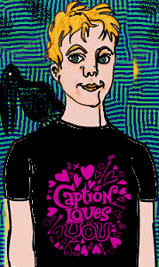
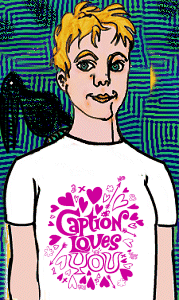

Caption, Oxford's annual small-press comics convention, was held in the Oxford Union Society, Oxford, England on the 18th and 19th of August 2001.
Help support CAPTION by buying a stylish tee-shirt! Designed by Woodrow Phoenix!
|  black £12 |
 white £12 |
If you want a shirt ready and waiting, you must get an order in by Saturday 11 August 2001 (or at least contact us asking to get one reserved so you can pay on the day). Please give us a colour (black or white) and a size (S, M, L, XL, XXL). If you are ordring advance, XXXL is available for an extra £1 (£13 total).
We will be printing a few extras to sell at the event itself, but if you don't order in advance, we may not have your favourite size or colour.
Last modified 2004-06-16 |
<webmaster>